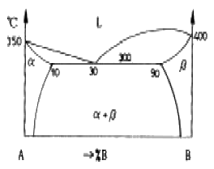
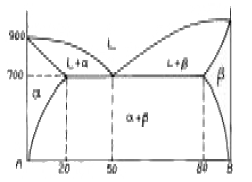
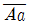
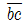
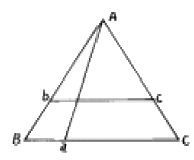
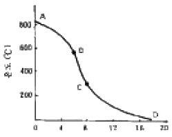

금속재료산업기사 (2005-03-06 기출문제)
1과목: 금속재료
1. 그림과 같은 A-B 합금계의 평형 상태도에서 70%A - 30%B의 합금이 350℃부터 평형 냉각하여 299.5℃까지 냉각되었다고 한다. 이때 존재하는 두상의 상대적 중량의 크기는?

- α=75%, β=25%
- α=25%, β=75%
- α=10%, β=90%
- α=90%, β=10%
(정답률: 65%)

2. 금속의 결정 구조에 관한 설명이 옳지 않은 것은?
- 실용금속의 결정구조 중에서 일반적으로 볼 수 있는 단위격자에는 체심입방격자, 면심입방격자, 조밀육방 격자의 기본형이 있다.
- 체심입방격자구조를 가지는 금속에는 상온에서 Fe 와 W, Mo, V 등이 있다.
- 면심입방 격자구조를 가지는 금속에는 Al, Cu, Mo 등으로 전성과 연성이 나쁜 것이 결점이다.
- 조밀육방격자에 속하는 금속에는 Zn, Mg, Cd, Co 등이다.
(정답률: 69%)
3. 금속이 용해할 때는 시간이 지나도 온도가 올라가지 않는 다.즉 금속 전부가 용해 해야만 온도가 올라가는 현상은?
- 열전도
- 비열
- 용융 잠열
- 비중
(정답률: 54%)
4. 금속을 용융상태에서 초고속 급냉에 의해 제조되는 재료로 인장강도와 경도를 크게 개선시킨 합금은?
- 수소저장용합금
- 비정질합금
- 형상기억합금
- 섬유강화합금
(정답률: 50%)
5. 불변반응의 형태가 잘못된 것은?
- 공정반응: 액상→ 고상1+고상2
- 포정반응: 고상1+액상→ 고상2
- 공석반응: 고상1→ 고상2+액상
- 포석반응: 고상1+고상2→ 고상3
(정답률: 43%)
6. SM45C를 설명한 것으로 맞지 않는 것은?
- SM45C는 기계구조용 탄소강을 말한다.
- 45는 인장강도를 말한다.
- S는 강을 말한다.
- C는 탄소를 말한다.
(정답률: 73%)
7. 내열용 Al합금으로써 주로 피스톤에 사용되는 것은?
- Y 합금
- 켈밋
- 오일라이트
- 러지메탈
(정답률: 66%)
8. 니켈-구리의 실용합금이 아닌 것은?
- 백동
- 콘스탄탄
- 모넬메탈
- 엘린바
(정답률: 45%)
9. 특수강에 첨가되는 원소의 일반적인 특성으로 옳지 않은 것은?
- Ni : 인성 증가
- Cr : 내식성 증가
- Mo : 뜨임취성 방지
- Si : 취성 증가
(정답률: 49%)
10. 927℃이상의 고온에서 강도나 크리프 특성을 개선 시키기 위해 Fe, Ni 합금을 기지로한 고융점계 섬유강화초합금은?
- FTM
- FRS
- FCD
- FCC
(정답률: 39%)
11. 500∼600 ℃ 까지 가열해도 뜨임효과에 의해 연화되지 않고 고온에서도 경도의 감소가 적은 것이 특징이며 18%W - 4%Cr - 1%V - 0.8∼0.9%C의 조성으로 된 강은?
- 다이스강(dies steel)
- 스테인리스강(stainless steel)
- 게이지용강(gauge steel)
- 고속도강(high speed steel)
(정답률: 53%)
12. 금속을 소성가공 할 때에 열간가공과 냉간가공의 기준이 되는 온도는 무엇이라 하는가?
- 연속냉각온도
- 연성취성천이온도
- 변태온도
- 재결정온도
(정답률: 67%)
13. TiC를 주성분으로 하고 Ni또는 Mo상을 결합상으로 제조한 초경합금공구강은?
- Cermet
- Kelmet
- Hastelloy
- Permalloy
(정답률: 35%)
14. 용해시에 흡수한 산소를 인(p)으로 탈산하여 산소를 0.01% 이하로 한 것으로 고온에서 수소취성이 없고 산소를 흡수하지 않으며 용접성이 좋은 동(Cu)은?
- 전기동(electrolytic copper)
- 정련동(electrolytic touch pitch copper)
- 무산소동(oxygen free high conductivity copper)
- 탈산동(deoxidized copper)
(정답률: 38%)
15. 회주철의 특성이 아닌 것은?
- 압축강도가 우수하다.
- 진동을 흡수하는 능력이 우수하다.
- 주조성이 우수하다.
- 인성이 아주 우수하다.
(정답률: 37%)
16. 동광석이 아닌 것은?
- 방연광
- 적동광
- 휘동광
- 황동광
(정답률: 52%)
17. 순금속과 합금의 비교설명 중 옳지 않은 것은?
- 일반적으로 합금은 순금속보다 용융점이 낮다.
- 순금속이 합금보다 열전도율이 높다.
- 강도와 경도는 합금이 크다.
- 열처리성은 순금속이 우수하다.
(정답률: 18%)
18. 불순물 반도체에 대한 설명 중 옳지 않은 것은?
- 진성반도체에 Fe, Cu, S 등을 다량 첨가하여 만든다.
- 첨가되는 불순물을 도너(donor)라고 부른다.
- 불순물 반도체에는 N형과 P형이 있다.
- N형 반도체는 (-)의 전자에 의해 전기전도가 일어난다.
(정답률: 39%)
19. 임계 전단응력 τ= (F/A) cosø·cosλ에서 cosøcosλ는?
- 버거스 인자
- 볼쯔만 인자
- 스미드 인자
- 프랭크 인자
(정답률: 24%)
20. 신소재합금과 대표적인 활용사례를 연결한 것이 잘못 연결된 것은?
- 초전도재료 - 자기부상열차
- 제진합금 - 잠수함 스크루
- 형상기억합금 - 인공위성 안테나
- 초소성합금 - 항공기 젯트엔진
(정답률: 30%)
2과목: 금속조직
21. 가공도가 클수록 재결정온도는 대체로 저하한다. 결정핵 생성수는 어떻게 되는가?
- 가공도가 클수록 결정핵 생성수가 많아진다.
- 가공도가 클수록 결정핵 생성수가 감소한다.
- 가공도에는 관계없이 금속에따라 고유생성수를 갖는다.
- 가공도와는 관계없고 다만 가열 냉각 속도에만 관계한다.
(정답률: 71%)
22. 다음의 상태도상에서 B 의 A 에 대한 최대 용해한도는?

- 20%
- 40%
- 60%
- 80%
(정답률: 28%)
23. 냉간가공으로 전위가 불규칙하게 배열된 것이 풀림에 의해서 전위가 안정한 배열로 되어 슬립면상에 수직으로 배열되는 현상은?
- 회복(recovery)
- 재결정(recrystallization)
- 폴리고니제이션(polygonization)
- 쌍정(twin)
(정답률: 43%)
24. 브라그 윌리암(Bragg-william)의 장범위 규칙도(S)에서 완전히 규칙적일 때 S는?
- 0
- 1
- 2
- 3
(정답률: 57%)
25. 금속에 있어서의 dc/dt=Dd2c/dx2 식은 무슨 법칙인가? (단, D : 확산계수, t : 시간, x : 봉의 길이 방향, c : 농도)
- Fick의 확산 제1법칙
- Fick의 확산 제2법칙
- Hume Rothery 법칙
- 베가드 법칙
(정답률: 58%)
26. 철의 변태에 대한 설명 중 옳지 않은 것은?
- Fe는 실온에서 강자성체이다.
- α철 → γ철로 변태시 구조는 수축 한다.
- A2변태는 결정구조의 변화를 수반하는 변태이다.
- 자성은 온도상승에 따라 감소하여 큐리점에서 급격히 감소한다.
(정답률: 30%)
27. 단결정체에 탄성한계 이상의 외력을 가할 때 일어나는 슬립(slip)에 대한 설명으로 맞는 것은?
- 슬립은 원자밀도가 최대인 면에서 최소인 방향으로 일어난다.
- 슬립은 원자밀도가 최소인 면에서 최대인 방향으로 일어난다.
- 슬립은 원자밀도가 최소인 면에서 최소인 방향으로 일어난다.
- 슬립은 원자밀도가 최대인 면에서 최대인 방향으로 일어난다.
(정답률: 20%)
28. Austenite 구역을 확대시키는 원소는?
- Cr
- Ni
- W
- V
(정답률: 43%)
29. 다음 복평형상태도를 설명한 것중 틀린 것은?
- Fe와 흑연을 최종 평형상으로 생각하는 것과 준안정 평형상태로서 Fe와 Fe3C의 평형상을 말한다.
- A1점이상 공정온도까지 α, Fe3C, C의 3상이 공존하는 것은 상율과 잘일치된다.
- Fe3C는 최종 안정상이고 C의 평형을 고려하지 않는 것이 단평형론이다.
- Fe3C는 잘 분해되지 않으므로 실제로 잘 이용 되고 있다.
(정답률: 37%)
30. 면심입방격자(F.C.C)에서 원자밀도가 최대인 격자면은?
- (100)
- (010)
- (001)
- (111)
(정답률: 67%)
31. 결정계 중 육방정계의 축장과 축각은?
- a=b=c, α=β=γ=90°
- a≠b≠c, α=β=γ=90°
- a≠b≠c, α≠β≠γ=90°
- a=b≠c, α=β=90°, γ=120°
(정답률: 40%)
32. 공정점에서 상률의 자유도는?
- 0
- 1
- 2
- 3
(정답률: 47%)
33. 규칙-불규칙 변태온도(Tc) 직하에서 변태가 점점 급격하게 진행되는 현상은?
- 협동현상
- 이력현상
- 복원현상
- 역위현상
(정답률: 7%)
34. 냉간가공을 하면 금속결정의 내부에 전위나 공격자점과 같은 결함의 증가로 나타나는 현상이 아닌 것은?
- 가공하면 경화된다.
- 전기저항은 증가한다.
- 가공하면 밀도가 증가한다.
- 전위의 집적에 의하여 인성은 저하한다.
(정답률: 26%)
35. 3원계 상태도에서

와
의 합금조성에 대한 설명이 옳은 것은?
 는 성분 B,C 를 항상 같은 비율로 품고
는 성분 B,C 를 항상 같은 비율로 품고  는 항상 일정량의 성분 A를 품는다.
는 항상 일정량의 성분 A를 품는다. 는 성분 A 를 항상 같은 비율로 품고
는 성분 A 를 항상 같은 비율로 품고  는 항상 일정량의 성분 B,C를 품는다.
는 항상 일정량의 성분 B,C를 품는다. 는 항상 일정량의 성분 A를 품고
는 항상 일정량의 성분 A를 품고  는 성분 B,C를 항상 일정비율로 품는다.
는 성분 B,C를 항상 일정비율로 품는다. 는 항상 일정량의 성분 B를 품고
는 항상 일정량의 성분 B를 품고  는 성분 A,C를 항상 같은 비율로 품는다.
는 성분 A,C를 항상 같은 비율로 품는다.
(정답률: 36%)
36. 재결정 거동에 영향을 미치는 인자가 아닌 것은?
- 온도
- 초기입자크기
- 조성
- 압력
(정답률: 30%)
37. 금속이 응고할 때 균일핵생성에서 핵생성 속도를 증가시키려면?
- 계면에너지가 커야 한다.
- 임계핵반경(r)이 커야 한다.
- 과냉도(△T)가 작아야 한다.
- 자유에너지 변화(△G)가 작아야 한다.
(정답률: 31%)
38. 일정온도에서 금속의 산화속도(oxidation rates)는 일반적으로 시간의 함수이다. 철의 경우 산화막두께 X 는 시간 t에 따라 어떻게 변하는가? (단, A는 상수이다)
- X = At
- X = t / A
- X = A(1 / t)
- X= Aet
(정답률: 36%)
39. 강의 마텐자이트(martensite)변태에 대한 설명 중 옳지 않은 것은?
- 마텐자이트 구조의 형태는 강의 탄소함량에 의해 결정된다.
- 마텐자이트 변태시는 원자의 확산이 일어나지 않는다.
- 마텐자이트 변태에 의해서는 변태전상(phase)의 조성변화가 일어나지 않는다.
- 탄소함량이 감소함에 따라 마텐자이트의 구조는 판상으로 변한다
(정답률: 39%)
40. 전율 고용체를 이루는 합금에서 A, B 두 성분의 비율이 얼마일 때 경도가 가장 높은가?
- A 성분은 0%, B 성분은 100%일 때 최대점을 갖는다.
- A 성분은 100%, B 성분은 0%일 때 최대점을 갖는다.
- A 성분 40%, B 성분은 60%일 때 최대점을 갖는다.
- A, B 두 성분의 양이 50%의 일 때 최대점을 갖는다.
(정답률: 70%)
3과목: 금속열처리
41. 철강을 560℃이상의 온도에서 산화시킬 때 철의 외부층에 생기는 산화피막은?
- Fe2O3
- Fe3P
- Fe3O4
- Fe
(정답률: 55%)
42. 냉간가공에 의한 스프링 성형 후 내부응력을 감소시키고 탄성을 높일 목적으로 행하는 저온 가열 열처리로서 표면을 가열온도에 따라 황색 또는 청색으로 나타내는 열처리 방법은?
- Maraging
- Patenting
- Blueing
- Slack quenching
(정답률: 59%)
43. 고망간강(hadfield steel)의 설명으로 틀린 것은?
- 약 12%Mn과 약 1%C를 함유하고 인성과 내마모성이 좋다.
- 주방상태 조직으로 탄화물, 흑연, 마텐자이트를 함유한다.
- 약1⑤0℃에서 수냉하면 오스테나이트 조직으로 된다.
- 광산기계, 준설기, 교차 레일 등에 쓰인다.
(정답률: 37%)
44. 고주파경화 처리시 사용되는 담금질방법이다. 이 중 가장 보편적으로 사용되는 냉각방법은?
- 자기냉각법
- 지체냉각법
- 분사냉각법
- 낙하투입냉각법
(정답률: 64%)
45. 가스 침탄을 하려고 한다. 원료가스로서 적합하지 않은 것은?
- 프로판(C8H8)
- 아르곤(Ar)
- 부탄(C4H10)
- 도시가스
(정답률: 48%)
46. 열처리 전·후 처리에 사용되는 설비가 아닌 것은?
- 버프연마기
- 쇼트 피닝기
- 샌드 블라스트기
- 강박시험기
(정답률: 69%)
47. 염욕 열처리의 장점이 아닌 것은?
- 균일한 온도분포를 유지할 수 있다.
- 소량 다품종의 열처리 즉 금형 및 공구류의 열처리에는 적합하지 않다.
- 담금질 온도가 높은 고속도강의 열처리에 적합하다.
- 처리품을 대기중에 꺼냈을 때 염욕제가 부착하여 피막을 형성, 대기와의 차단을 돕고 표면 산화를 막아준다.
(정답률: 60%)
48. 열간공구강인 STD61종 소재는 담금질하면 오스테나이트가 잔류하는데 이 잔류 오스테나이트를 마텐자이트화 하기 위하여 영하의 온도에서 실시하는 처리는?
- 심냉처리
- 오스템퍼처리
- 파텐팅 처리
- 블루잉 처리
(정답률: 81%)
49. 고주파 열처리에서 피가열 물질에 대해서 코일의 가열속도 (능률)가 가장 큰 것은?
- 외면가열
- 내면가열
- 평면가열
- 모두 동일하다
(정답률: 48%)
50. 고체 침탄제의 구비조건이 아닌 것은?
- 장시간 사용하여도 동일 침탄력을 유지하여야 한다.
- 고온에서 침탄력이 강해야 한다.
- 침탄시의 용적 변화가 크고 침탄 강재 표면에 고착물이 융착되어야 한다.
- 침탄 성분 중 P, S 성분이 적어야 한다.
(정답률: 57%)
51. 구상 흑연 주철을 구상화 처리 후 용탕상태로 방치하면 흑연 구상화의 효과가 없어지는 현상은?
- 질량효과(Mass effect)
- 페딩(Fading)
- 경화능(Hardenability)
- 회복(Recovery)
(정답률: 56%)
52. 슈퍼 두랄루민의 담금질 온도는 약 어느 정도인가?
- 120℃
- 510℃
- 950℃
- 1⑤0℃
(정답률: 28%)
53. 열처리 제품의 산화를 억제하고 광휘열처리를 할 수 있는 로는?
- 용광로
- 진공로
- 용선로
- 열풍로
(정답률: 59%)
54. 가열로 내의 온도 불균일에 의한 결함을 방지하는 방법 중 옳지 못한 것은?
- 부품 크기, 형상을 고려하지 않는다.
- 노내 분위기 교반장치를 설치한다.
- 지시치와 실측치를 점검한다.
- 표준 열전대로 온도를 측정한다.
(정답률: 81%)
55. 정수에서의 냉각곡선이다. 물의 온도가 상승하면 증기막이 안정되므로 구간이 연장되고 냉각속도가 현저히 지연되는 곳은?

- A-B
- B-C
- C-D
- B-D
(정답률: 30%)
56. 열처리시 발생하는 문제점 중 선천적 설계불량인 것은?
- 탈탄층
- 비금속개재물
- 재료선택
- 편석
(정답률: 46%)
57. 높은 전기 전도도, 고내식성, 고탄성 한도의 세가지 요건을 갖춘 Be - 청동의 열처리 내용 중 옳지 못한 것은?
- 담금질은 760∼780℃로 가열하여 수냉한다.
- 뜨임은 310∼330℃로 2∼2.5시간 처리한다.
- 어닐링은 300℃에서 1시간 처리한다.
- Be - 청동의 스프링제조는 뜨임처리 전에 성형 가공한다
(정답률: 32%)
58. 화염경화처리의 특징이 아닌 것은?
- 부품의 크기나 형상에 제한이 없다.
- 국부적인 담금질이 어렵다.
- 가열온도의 조절이 어렵다.
- 담금질 변형이 적다.
(정답률: 37%)
59. 흑심가단주철의 열처리에 영향을 미치는 요소가 아닌 것은?
- 화학조성
- 주물의 두께
- 냉각조건
- 가열방법
(정답률: 22%)
60. 주철의 합금원소를 설명한 것 중 틀린 것은?
- Cr은 흑연화 촉진원소이다.
- Ni은 흑연화 촉진원소이다.
- V은 흑연화 저해원소이다.
- Mo은 흑연화 저해원소이다.
(정답률: 42%)
4과목: 재료시험
61. 담금질한 탄소강 표면의 연마균열을 검출할 수 있는 시험방법은?
- 방사선투과시험
- 초음파탐상시험
- 침투탐상시험
- 음향방출시험
(정답률: 62%)
62. 하중을 제거하면 소성변형이 되지 않고 원상태로 복귀하는 현상은?
- 항복점
- 극한강도
- 비례한계
- 탄성한계
(정답률: 75%)
63. 충격시험편의 제작 설명 중 옳지 않은 것은?
- 시험편은 가공에 의한 연화나 경화의 영향이 가능한 일어나지 않도록 기계가공한다.
- 열처리한 재료의 평가를 위한 시험편은 열처리 후에 기계 가공한다.
- 시험편의 단면을 제외한 4면은 평활하지 않아도 된다.
- 시험편의 기호·번호 등은 시험에 영향을 미치지 않는 부위에 표시한다.
(정답률: 60%)
64. 금속의 마모시험 결과로 다음 중 틀린 것은?
- 윤활제를 사용하든가 안하든가 영향을 받지 않는다.
- 표면의 조도에 따라 마찰계수의 차이가 생긴다.
- 마찰로 생기는 미분의 처리
- 상대금속의 성질
(정답률: 57%)
65. 금속조직에서 상(Phase)의 양을 측정하는 방법에 해당되지 않는 것은?
- 점의 측정법
- 직선의 측정법
- 면적의 측정법
- 체적의 측정법
(정답률: 38%)
66. 방사선 보호에 대한 설명 중 잘못된 것은?
- 연속 방사선 노출은 개인에 따라 차이는 있으나, 평균적으로 2mrem/year, 100mrem/Hr, 500mrem/week의 조사량이 안전하다.
- 실제 노출구역 및 주요작업장은 규정에 따라 두꺼운 콘크리트나 납으로 차폐되어야 한다.
- 방사선으로부터 최상의 보호는 거리로서 방사선 강도는 선원으로부터 거리의 제곱에 비례하여 감소하므로 노출 중 인접구역으로 접근금지이다.
- 최대허용선량은 한사람이 평생동안 방사선에 노출되어도 부상을 초래하지 않을 임계선량이다.
(정답률: 44%)
67. X-선 발생장치에 의하여 방사선투과시험을 하고자 할 때 X-선 발생장치에서 나오는 X-선 빔의 투과력은 어느 것에 의하여 결정되는가?
- 전압 또는 파장
- 시간
- 전류와 시편무게
- 선원 필름간의 거리
(정답률: 37%)
68. 매우 작은 응력을 반복하여 작용시켰을 때 그 재료 전체 혹은 국부적으로 슬립변형이 생기며 이것이 시간과 더불어 점차적으로 발전해 가는 현상을 응력-반복회수로 알아보는 시험은?
- 인장시험
- 경도시험
- 피로시험
- 마모시험
(정답률: 67%)
69. 설퍼 프린트법에서 황편석의 분류 중 중심부 편석의 기호는?
- Sw
- SC
- SI
- SD
(정답률: 78%)
70. 자분탐상시험을 이용하여 금속재료의 표면에 있는 미세한 균열을 검출하려고 할 때 가장 검출능력이 좋은 전류의 형태는?
- 직류
- 교류
- 충격류
- 반자정류교류
(정답률: 62%)
71. 인체에서 전격(Electric Shock)의 위험성에 대한 설명 중 잘못된 것은?
- 감전의 피해 정도는 통전되는 전류의 량에 따라 결정된다.
- 감전의 피해 정도는 통전되는 경로에 따라 결정된다.
- 감전의 피해 정도는 통전되는 시간에 따라 결정된다.
- 감전의 피해 정도는 교류보다 직류의 경우가 더 크다.
(정답률: 44%)
72. 충격시험에서 단위 면적당의 흡수에너지가 의미하는 단위는?
- kgf·m/cm2
- kgf/m
- kgf/mm3
- kgf·cosθ-m
(정답률: 69%)
73. 주철이 응고할 때 냉각속도가 빠르면 얇은 부분에 흰색의 고경도 조직이 얻어진다. 일반적으로 이곳은 취성이 있어 일반주물에는 피하는 것이 좋다. 이 조직은 무엇인가?
- 펄라이트 조직
- 시멘타이트 조직
- 오스테나이트 조직
- 페라이트 조직
(정답률: 34%)
74. 그라인더에서 비산하는 연삭분을 유리판상에 삽입해서 그 크기와 색상 및 형상 등을 현미경으로 관찰하여 강재의 종류를 판정하는 시험은?
- 분말 불꽃 시험
- 매립 시험
- 펠릿 시험
- 그라인더 불꽃 시험
(정답률: 5%)
75. 인장시험시 재료의 변형능을 표시 하는 척도와 가장 관계가 깊은 것은?
- 신율 및 단면수축
- 피로강도
- 크리프강도
- 잔류응력
(정답률: 53%)
76. 일반적으로 철강의 기계적성질은 탄소량이 증가 함에 따라 변화되는데 이때 감소되는 것은?
- 강도
- 연신율
- 항복점
- 경도
(정답률: 65%)
77. 검사해야 할 부분을 용액중에 담그고 이것을 통해 가스가 지나감에 따라 거품을 일으키게 하며 이 압력을 받아 도망가는 가스를 탐지하여 결함 부위를 검출하는 시험은?
- 버블법
- 스니퍼법
- 후드법
- 현상법
(정답률: 50%)
78. 변태점 측정법에 속하지 않는 것은?
- 금속 방식법, 방청법 및 부식법(corrosion)
- 열 분석법(thermal analysis)
- 비열법(specific heat analysis )
- X-선 분석법(X-ray analysis)
(정답률: 28%)
79. 인장시편의 초기단면적이 A1 이고 인장시험 후 끊어진 단면적이 A2 이면 단면수축율은?
- [(A1 - A2 ) / A1 ] X 100
- [(A1 + A2 ) / A1 ] X 100
- [(A1 - A2 ) / A2 ] X 100
- [(A1 + A2 ) / A2 ] X 100
(정답률: 50%)
80. 충격 시험에서 얻을 수 있는 대표적인 재료의 기계적 성질은?
- 경도와 피로한도
- 인성과 취성
- 인장강도와 경도
- 인성과 크리프 성질
(정답률: 42%)
이때, α상과 β상의 상대적 중량은 평형 상태에서의 비율과 같다. 평형 상태에서는 75%가 α상이고 25%가 β상이므로, 299.5℃에서도 α상과 β상의 상대적 중량은 75%와 25%가 된다. 따라서 정답은 "α=75%, β=25%"이다.